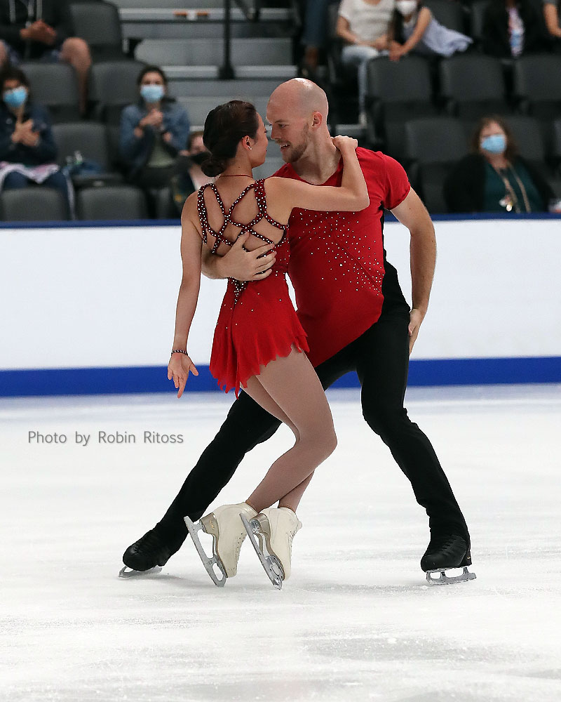
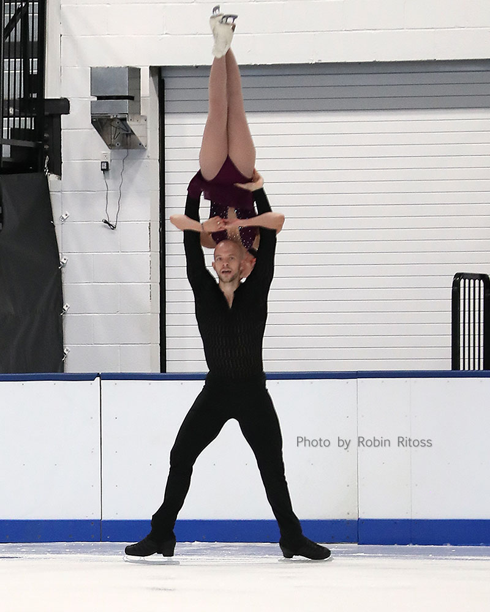
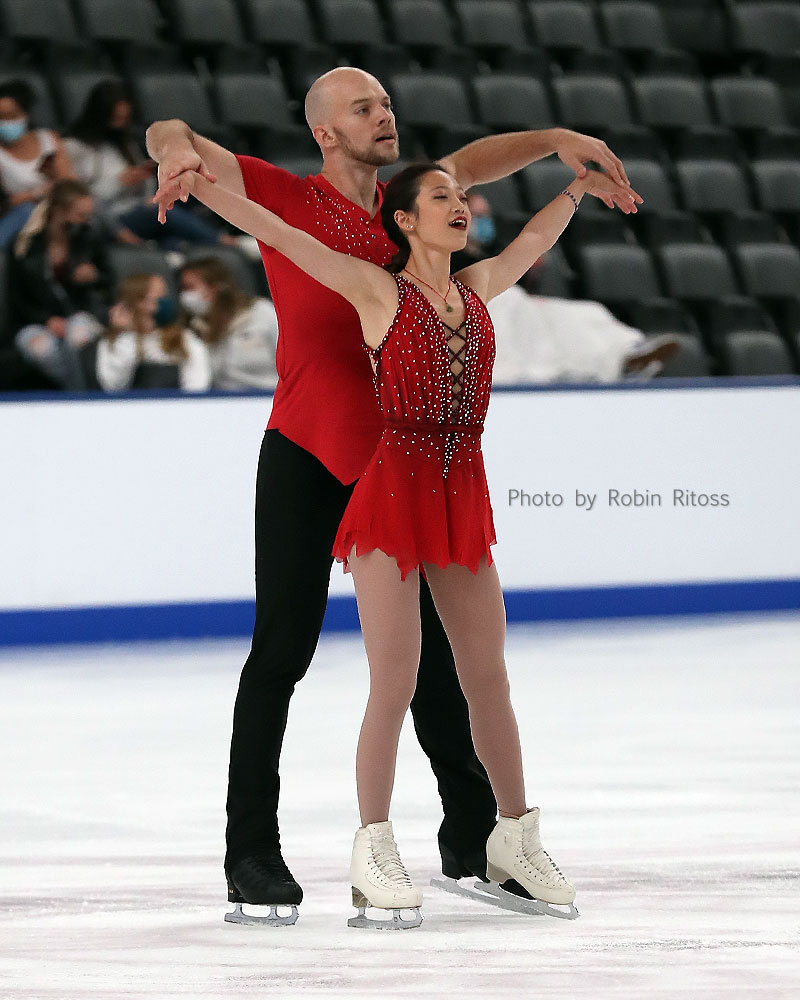
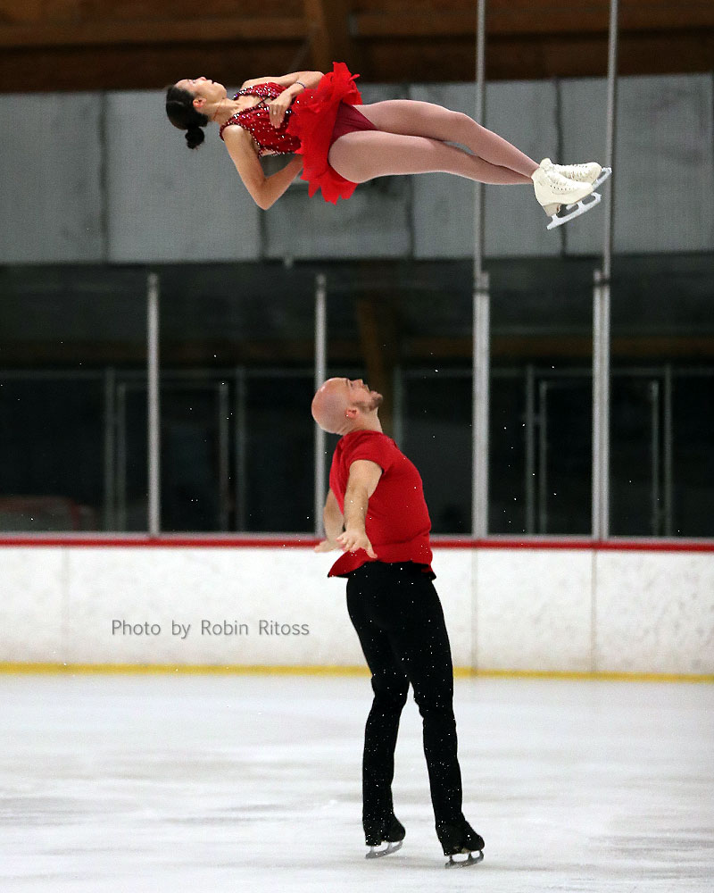
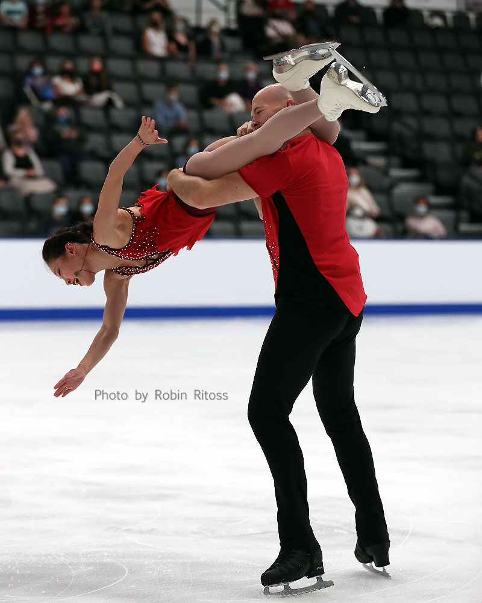
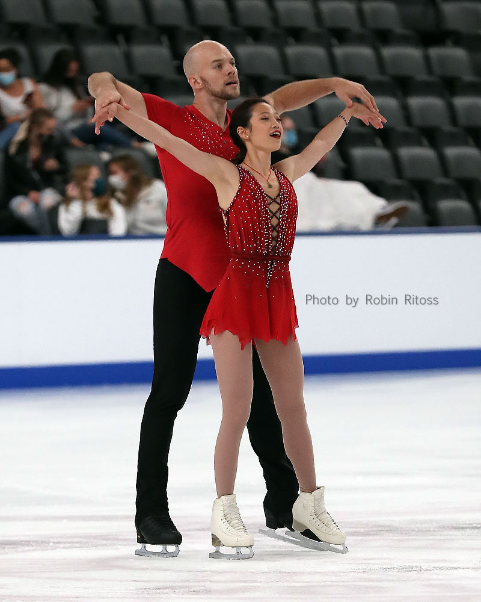
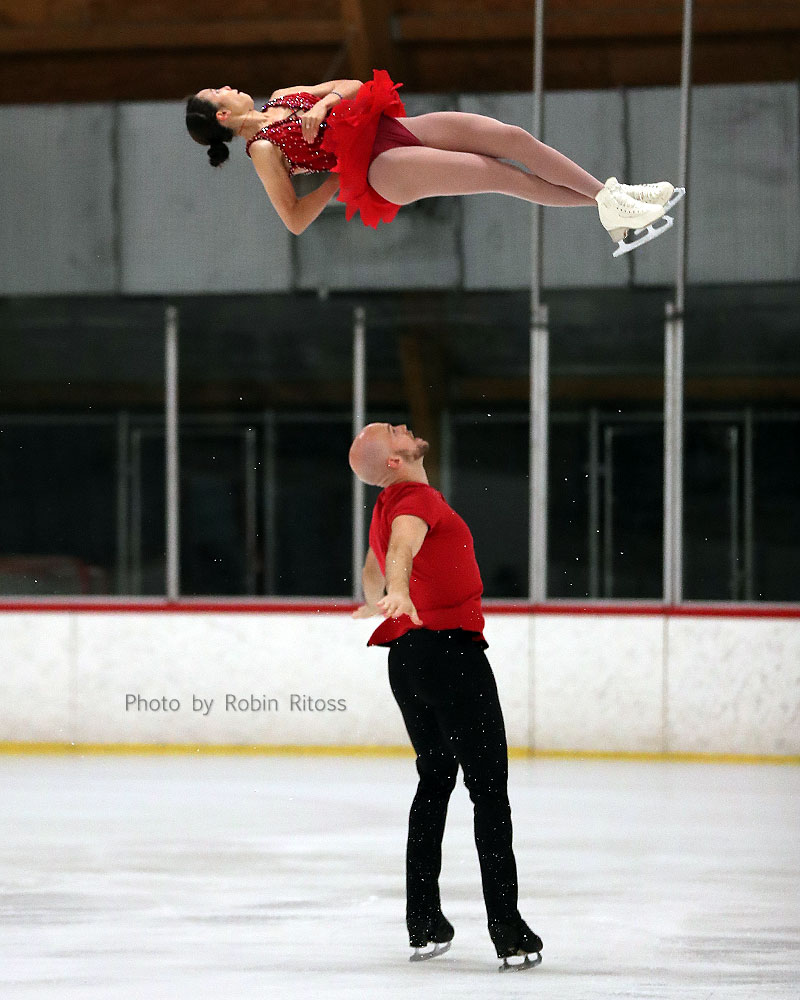
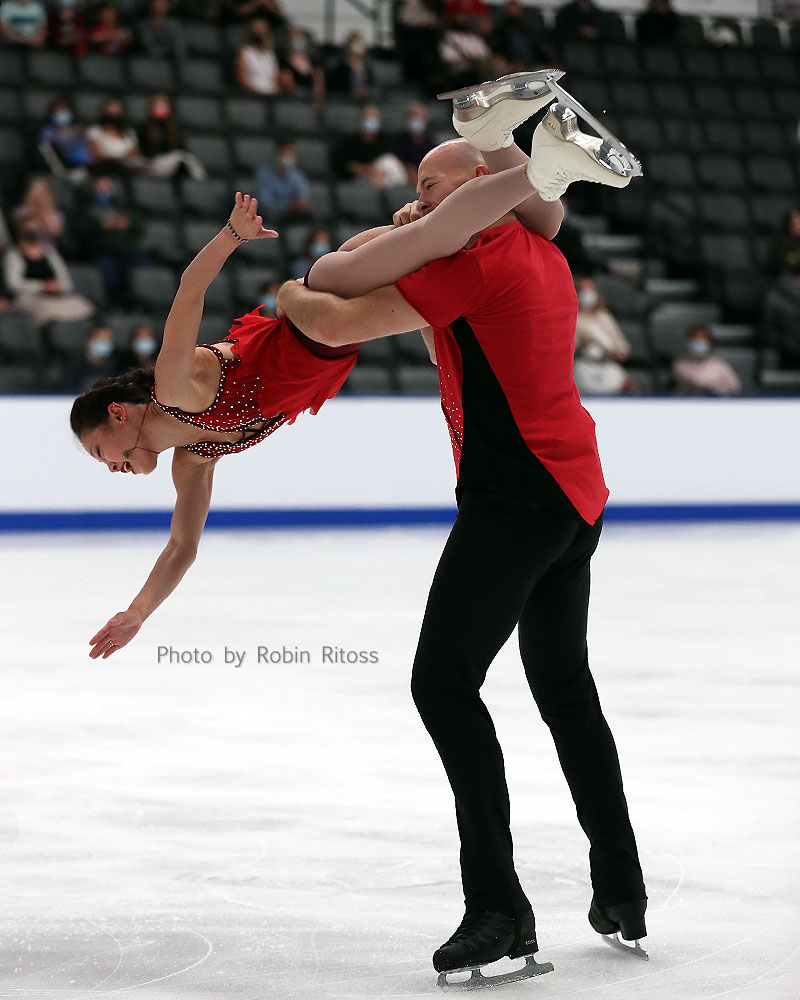

Chelsea Liu
For over 12 years, Chelsea Liu has been a noteworthy athlete in figure skating. As a 5-time national and 5-time international medalist, she is a decorated elite athlete. Representing Team USA from the young age of 9 years old, she has had once in a lifetime opportunities to travel the world, visiting 11 different countries and being emersed into new cultures for professional work. Having endured countless injuries, including six, severe concussions and two major surgeries on her ankle, Chelsea shows perserverance, persistance, and passion in everything she does. With everything that Chelsea has learned over the past 12 years of her competitive figure skating career, she strives to give back to the figure skating community through her own coaching.
Driven by her passion for figure skating, Chelsea takes pride in providing the best possible coaching for other athletes. As a figure skating coach, she aims to provide a fun, safe, and caring learning environment for all her students. In addition to that, Chelsea seeks to build discipline to help individuals achieve their goals not just in sport but in other aspects of life as well. As the old saying goes, "Discipline is the fuel of achievement."
Outside of the rink, Chelsea works as a full-time child caretaker and educational instructor. Working with children to create a better future for them is her life's passion and purpose. Chelsea also attends the University of California, Riverside as a full-time student, pursuing her B.S. in Sociology and a minor in Information Systems.
Experience
Figure Skating Instructor
• Coached children (ages 2+) & adults figure skating skills
• Group & private lessons
Figure Skating Assistant
• Assistant figure skating instructor in group classes
• Working the cash register
• Hosting birthday parties
• Monitoring public skating safety
• Facility cleaning
• Translating between customers & employees (Mandarin Chinese)
Child Care Provider
• Started providing child care (for children aged 0-16 years) at the age of 14
• Responsibilities include: monitoring, feeding, diapering, & cooking nutritious gluten/dairy-free meals (for whole family)
• Other responsiilities include: cleaning/laundry, driving children to & from school, & educational assistance (served as primary educator during the COVID-19 pandemic)
Education
University of California, Riverside
University of California, Riverside
Irvine Valley College
Portfolio







 